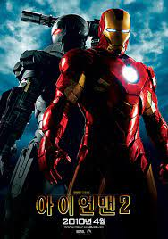

이름 : 매튜(김재연)
사는 곳 : 서울 구로구
안녕하세요 저는 매튜라고합니다. 만나서 정말 반갑고, 앞으로 여러분들과 함께 성장하고 싶다는 아주 큰 욕심이 있습니다!
| 순위 | 제목 | 포스터 | 줄거리 | 바로가기 |
| 1 | 아이언맨2 |  | 토니는 아이언맨으로서의 책임과 부담을 느끼면서 악당 휘플래쉬와의 대결에 직면합니다. 토니는 자신의 능력을 발전시키기 위해 새로운 기술과 도전을 시도하며, 새로운 동료인 워머신과 함께 싸웁니다. 마지막으로, 토니는 자신과 그의 아버지의 과거와 연결되는 비밀을 파헤치며 휘플래쉬와의 최종 대결을 벌이게 됩니다. | 바로가기 |
| 2 | 위대한 쇼맨 | 휴잭맨이 출연하며, 다양한 사람들이 서커스를 하며 함께 성장해가는 뮤지컬 영화이다. | 바로가기 | |
| 3 | 씽 | 버스터 문이라는 코알라가 극장을 유지하기 위해 오디션을 개최하게되고, 많은 동물들이 오디션에 참가하며 벌어지는 일들을 보여주는 뮤지컬 영화이다. | 바로가기 | |
| 4 | 씽 2게더 | 어느정도 성공한 버스터 문이 마치 할리우드와 같은 메이저로 진출하기 위해 고군분투하는 내용을 다루는 뮤지컬 영화이다. | 바로가기 | |
| 5 | 탑건:매버릭 | 전설적인 전투기 조종사 매버릭과 탑건 교육생들이 함께 미션을 수행하며 벌어지는 일들을 다룬 영화이다. | 바로가기 |